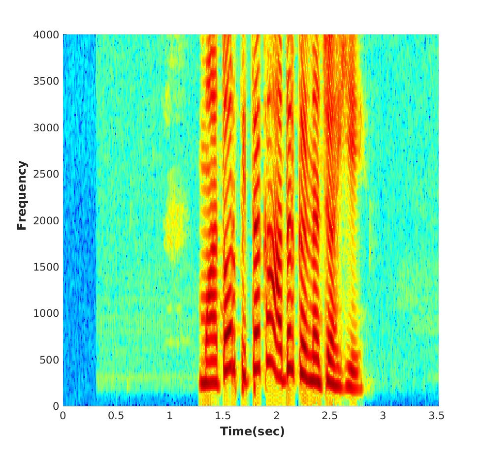

Speech emotion recognition (SER) refers to the classification/recognition of the person’s emotional state using the speech signal. SER has a lot of applications in real life. It can be beneficial for applications where natural human-computer interaction is required.
In this work we have used Convolutional neural network for classifying emotions. Generally, spectrograms are given as input to the CNN. Spectrogram is a time-frequency representation of a signal. In spectrogram, Fourier transform of a short-time windowed signal is taken with some overlapping (typically around 10 ms). However, spectrgrams are unable to capture time and frequency resolution simultaneously.
In this work, we explore the SFF spectrogram as an alternative representation of speech for SER. We have modified the SFF spectrogram by taking the average of the amplitudes of all the samples between two successive glottal closure instants (GCI) locations. The duration between two successive GCI locations gives the pitch, motivating us to name the modified SFF spectrogram as Pitch-synchronous SFF spectrogram.
The proposed pitch-synchronous SFF spectrogram produced accuracy values of 63.95% (unweighted) and 70.4% (weighted) on the IEMOCAP dataset. These correspond to an improvement of +7.35% (unweighted) and +4.3% (weighted) over state-of-the-art result on the STFT sepctrogram using CNN. Specially, the proposed method recognized 22.7% of the happy emotion samples correctly, whereas this number was 0% for state-of-the-art results. These results also promise a much wider use of the proposed pitch-synchronous SFF spectrogram for other speech-based applications.
Here are some examples, where our proposed method correctly classified 'happy' emotion.